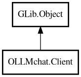

Client
Object Hierarchy:

Description:
public class Client : Object
Main client class for interacting with Ollama API and OpenAI-compatible REST interfaces.
Provides methods for chat, model management, and tool integration. Handles HTTP requests, streaming responses, and function calling.
Manages tool registration and execution with permission checking.
Basic Usage
var connection = new Settings.Connection() {
url = "http://127.0.0.1:11434/api"
};
var client = new Client(connection);
var chat = new Call.Chat(client, "llama3.2") {
stream = true
};
chat.messages.add(new Message(chat, "user", "Hello!"));
var response = yield chat.exec_chat();
Tool Integration
// Add tools to Chat before chatting
var read_file = new Tools.ReadFile(client);
var chat = new Call.Chat(client, "llama3.2");
chat.add_tool(read_file);
// Tools are automatically called when the model requests them
chat.messages.add(new Message(chat, "user", "Read README.md"));
var response = yield chat.exec_chat();
Streaming
var chat = new Call.Chat(client, "llama3.2") {
stream = true
};
chat.message_created.connect((msg, content) => {
if (msg.is_content && msg.is_stream) {
// Process incremental content
print(content.chat_content);
}
});
Content:
Properties:
- public HashMap<string,Model> available_models { get; }
Available models loaded from the server, keyed by model name.
- public Config2? config { get; set; }
Configuration settings (Config2 instance).
- public Connection connection { get; set; }
Connection configuration for this client.
- public uint timeout { get; set; }
HTTP request timeout in seconds. Default is 300 seconds (5 minutes) to
accommodate long-running LLM requests. Set to 0 for no timeout (not recommended).
Creation methods:
Methods:
- public async Chat chat (string text, Cancellable? cancellable = null) throws Error
Legacy chat method for backward compatibility.
- public async Chat chat_execute (Chat call) throws Error
Executes a pre-prepared Chat object.
- public async Embed embed (string input, int dimensions = -1, bool truncate = false, Cancellable? cancellable = null) throws Error
Generates embeddings for the input text.
- public async Embed embed_array (ArrayList<string> input_array, int dimensions = -1, bool truncate = false, Cancellable? cancellable = null) throws Error
Generates embeddings for an array of input texts.
- public async void fetch_all_model_details () throws Error
Fetches detailed information for all available models and populates
available_models.
- public async Generate generate (string prompt, string system = "", Cancellable? cancellable = null) throws Error
Generates a response for the provided prompt.
- public async ArrayList<Model> models () throws Error
- public async ArrayList<Model> ps () throws Error
- public async Model show_model (string model_name) throws Error
Gets detailed information about a specific model including
capabilities and stores it in available_models.
- public async string version (Cancellable? cancellable = null) throws Error
Gets the version of the Ollama server.
Signals:
- public signal void chat_send (Chat chat)
Emitted when a chat request is sent to the server. This signal is
emitted when the request is about to be sent, including initial chat requests and automatic continuations after tool execution.
- public signal void message_created (Message m, ChatContentInterface? content_interface)
Emitted when a message is created in the conversation. This signal is
the primary driver for message creation events, used for both persistence (Manager) and UI display. Messages are created before prompt
engine modification to preserve original user text.
- public signal void stream_chunk (string new_text, bool is_thinking, Chat response)
Emitted when a streaming chunk is received from the chat API.
- public signal void stream_content (string new_text, Chat response)
Emitted when streaming content (not thinking) is received from the
chat API.
- public signal void stream_start ()
Emitted when the streaming response starts (first chunk received).
This signal is emitted when the first chunk of the response is processed, indicating that the server has started sending data back.
- public signal void tool_message (Message message)
Emitted when a tool sends a status message during execution.
Fields:
Inherited Members:
All known members inherited from class GLib.Object
- @get
- @new
- @ref
- @set
- add_toggle_ref
- add_weak_pointer
- bind_property
- connect
- constructed
- disconnect
- dispose
- dup_data
- dup_qdata
- force_floating
- freeze_notify
- get_class
- get_data
- get_property
- get_qdata
- get_type
- getv
- interface_find_property
- interface_install_property
- interface_list_properties
- is_floating
- new_valist
- new_with_properties
- newv
- notify
- notify_property
- ref_count
- ref_sink
- remove_toggle_ref
- remove_weak_pointer
- replace_data
- replace_qdata
- set_data
- set_data_full
- set_property
- set_qdata
- set_qdata_full
- set_valist
- setv
- steal_data
- steal_qdata
- thaw_notify
- unref
- watch_closure
- weak_ref
- weak_unref